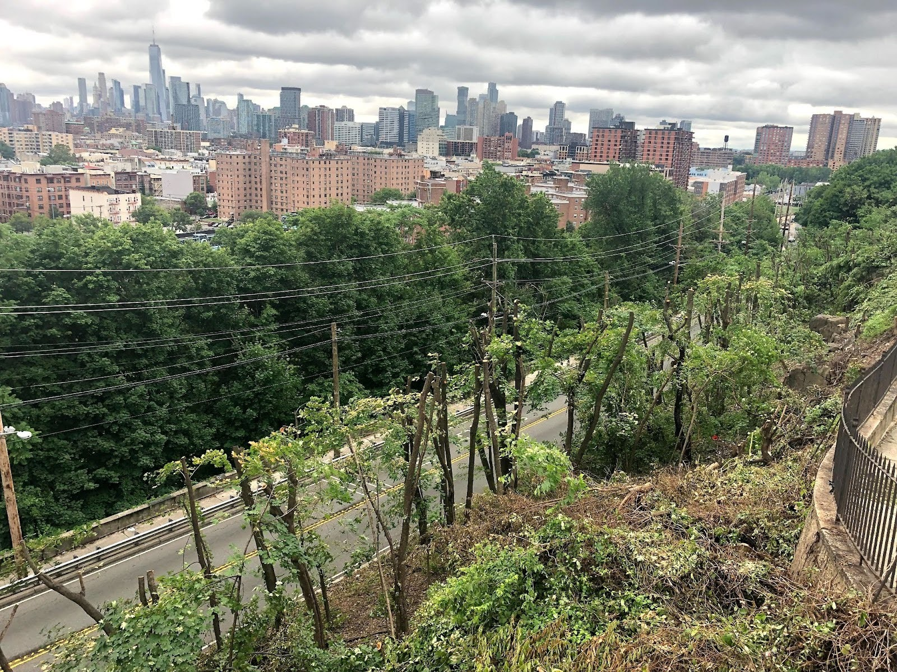
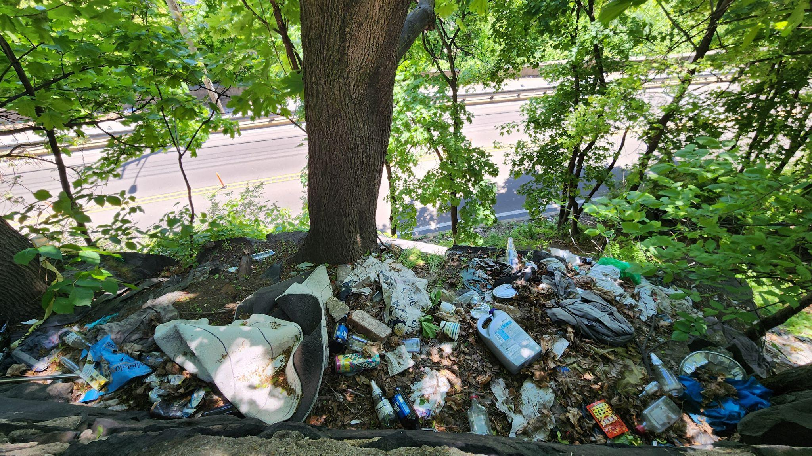

Tree of Heaven, Kudzu, Japanese Knotweed, English Ivy, and Norway Maple are displacing native species and degrading the ecosystem.
Just topping plants when they block visibility of roadways and skylines — rather than following proper ecological management practices.
Illegal dumping and encampments in areas that are difficult to access and clean.

Topped trees below Riverview Park
July 2021

Trash below Riverview Park
May 2026
Begin with City-owned lots on the Palisades cliffs, specifically underneath Riverview Park.
Create a master plan for environmental management on the Lower Palisades following habitat restoration best practices for urban natural areas. Find funding for fixing invasive plant and trash issues. Collaborate with local orgs such as PRISM and NYRP.
There's already the Jersey City Palisades Preservation Overlay District (PPOD) ordinance that can be leveraged for protection and restoration efforts.